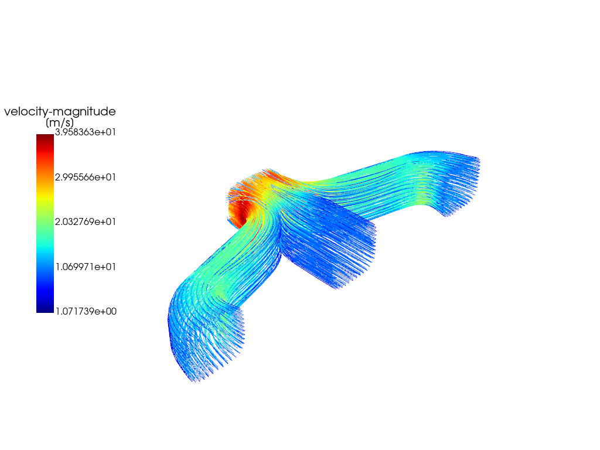
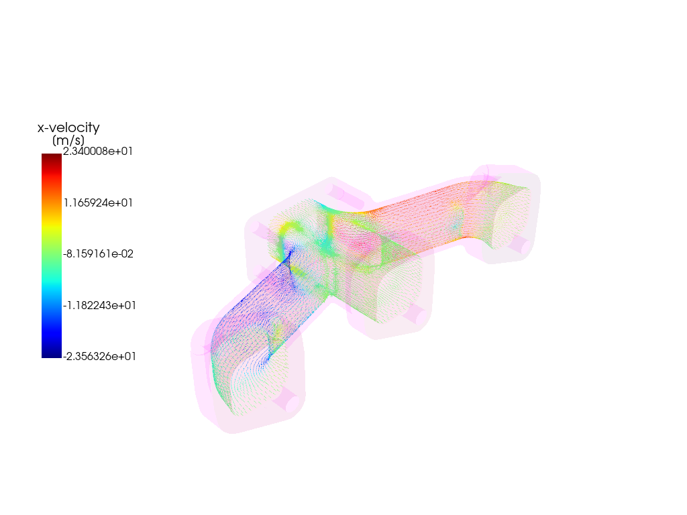

Note
Go to the end to download the full example code.
Enhanced Postprocessing with PyVista and Matplotlib#
This updated example demonstrates postprocessing capabilities in PyFluent using an object-oriented approach, providing a more user-friendly interface and improved flexibility. The 3D model used in this example is an exhaust manifold, where high-temperature turbulent flows are analyzed in a conjugate heat transfer scenario.
Key Improvements:
Object-Oriented Design: The code has been modularized into classes and methods, enhancing maintainability and reusability.
Interactive User Interface: The user interface now allows seamless interaction, enabling users to control and customize postprocessing parameters.
Enhanced Plot Interaction: Users have greater freedom to interact with the plots, such as adding and super-imposing multiple plots, and toggling data views, enhancing the visualization experience.
This example utilizes PyVista for 3D visualization and Matplotlib for 2D data plotting. The new design provides a streamlined workflow for exploring and analyzing the temperature and flow characteristics in the exhaust manifold.
Perform required imports#
Perform required imports and set the configuration.
import ansys.fluent.core as pyfluent
from ansys.fluent.core import examples
from ansys.fluent.visualization import (
Contour,
GraphicsWindow,
Mesh,
Monitor,
Pathline,
Surface,
Vector,
XYPlot,
config,
)
pyfluent.CONTAINER_MOUNT_PATH = pyfluent.EXAMPLES_PATH
config.interactive = False
config.view = "isometric"
Download files and launch Fluent#
Download the case and data files and launch Fluent as a service in solver mode with double precision and two processors. Read in the case and data files.
import_case = examples.download_file(
file_name="exhaust_system.cas.h5", directory="pyfluent/exhaust_system"
)
import_data = examples.download_file(
file_name="exhaust_system.dat.h5", directory="pyfluent/exhaust_system"
)
solver_session = pyfluent.launch_fluent(
precision=pyfluent.Precision.DOUBLE,
processor_count=2,
start_transcript=False,
mode=pyfluent.FluentMode.SOLVER,
)
solver_session.settings.file.read_case(file_name=import_case)
solver_session.settings.file.read_data(file_name=import_data)
Create graphics object for mesh display#
Create a graphics object for the mesh display.
mesh_surfaces_list = [
"in1",
"in2",
"in3",
"out1",
"solid_up:1",
"solid_up:1:830",
"solid_up:1:830-shadow",
]
mesh = Mesh(solver=solver_session, show_edges=True, surfaces=mesh_surfaces_list)
graphics_window = GraphicsWindow()
graphics_window.add_graphics(mesh, position=(0, 0))
mesh = Mesh(solver=solver_session, surfaces=mesh_surfaces_list)
graphics_window.add_graphics(mesh, position=(0, 1))
graphics_window.show()
Create plane-surface XY plane#
Create a plane-surface XY plane.
surf_xy_plane = Surface(
solver=solver_session,
type="plane-surface",
creation_method="xy-plane",
z=-0.0441921,
)
graphics_window = GraphicsWindow()
graphics_window.add_graphics(surf_xy_plane, position=(0, 0))
Create plane-surface YZ plane#
Create a plane-surface YZ plane.
surf_yz_plane = Surface(
solver=solver_session, type="plane-surface", creation_method="yz-plane", x=-0.174628
)
graphics_window.add_graphics(surf_yz_plane, position=(0, 1))
Create plane-surface ZX plane#
Create a plane-surface ZX plane.
surf_zx_plane = Surface(
solver=solver_session,
type="plane-surface",
creation_method="zx-plane",
y=-0.0627297,
)
graphics_window.add_graphics(surf_zx_plane, position=(0, 2))
graphics_window.show()
Create iso-surface on outlet plane#
Create an iso-surface on the outlet plane.
surf_outlet_plane = Surface(solver=solver_session)
surf_outlet_plane.type = "iso-surface"
surf_outlet_plane.field = "y-coordinate"
surf_outlet_plane.iso_value = -0.125017
graphics_window = GraphicsWindow()
graphics_window.add_graphics(surf_outlet_plane, position=(0, 0))
Create iso-surface on mid-plane#
Create an iso-surface on the mid-plane.
surf_mid_plane_x = Surface(
solver=solver_session, type="iso-surface", field="x-coordinate", iso_value=-0.174
)
graphics_window.add_graphics(surf_mid_plane_x, position=(1, 0))
graphics_window.show()
Create iso-surface using velocity magnitude#
Create an iso-surface using the velocity magnitude.
surf_vel_contour = Surface(
solver=solver_session,
type="iso-surface",
field="velocity-magnitude",
rendering="contour",
iso_value=0.0,
)
graphics_window = GraphicsWindow()
graphics_window.add_graphics(surf_vel_contour, position=(0, 0))
Create temperature contour on mid-plane and outlet#
Create a temperature contour on the mid-plane and the outlet.
temperature_contour = Contour(solver=solver_session)
temperature_contour.field = "temperature"
temperature_contour.surfaces = [surf_mid_plane_x.name, surf_outlet_plane.name]
graphics_window.add_graphics(temperature_contour, position=(0, 1))
Create contour plot of temperature on manifold#
Create a contour plot of the temperature on the manifold.
cont_surfaces_list = [
"in1",
"in2",
"in3",
"out1",
"solid_up:1",
"solid_up:1:830",
]
temperature_contour_manifold = Contour(
solver=solver_session,
field="temperature",
surfaces=cont_surfaces_list,
)
graphics_window.add_graphics(temperature_contour_manifold, position=(1, 0))
Create vector#
Create a vector on a predefined surface.
velocity_vector = Vector(
solver=solver_session,
field="x-velocity",
surfaces=["solid_up:1:830"],
scale=2,
)
graphics_window.add_graphics(velocity_vector, position=(1, 1))
graphics_window.show()
Create Pathlines#
Create a pathlines on a predefined surface.
pathlines = Pathline(solver=solver_session)
pathlines.field = "velocity-magnitude"
pathlines.surfaces = ["inlet", "inlet1", "inlet2"]
graphics_window = GraphicsWindow()
graphics_window.add_graphics(pathlines)
graphics_window.show()
graphics_window = GraphicsWindow()
graphics_window.add_graphics(mesh, opacity=0.05)
graphics_window.add_graphics(velocity_vector)
graphics_window.show()
- 
- 
Create XY plot#
Create the default XY plot.
xy_plot_object = XYPlot(
solver=solver_session,
surfaces=["outlet"],
y_axis_function="temperature",
)
plot_window = GraphicsWindow()
plot_window.add_plot(xy_plot_object, position=(0, 0))
Create residual plot#
Create and display the residual plot.
residual = Monitor(solver=solver_session)
residual.monitor_set_name = "residual"
plot_window.add_plot(residual, position=(0, 1))
Solve and plot solution monitors#
Solve and plot solution monitors.
solver_session.solution.initialization.hybrid_initialize()
solver_session.solution.run_calculation.iterate(iter_count=50)
mass_bal_rplot = Monitor(solver=solver_session)
mass_bal_rplot.monitor_set_name = "mass-bal-rplot"
plot_window.add_plot(mass_bal_rplot, position=(1, 0))
point_vel_rplot = Monitor(solver=solver_session, monitor_set_name="point-vel-rplot")
plot_window.add_plot(point_vel_rplot, position=(1, 1))
plot_window.show()
Close Fluent#
Close Fluent.
solver_session.exit()
Total running time of the script: (1 minutes 59.763 seconds)